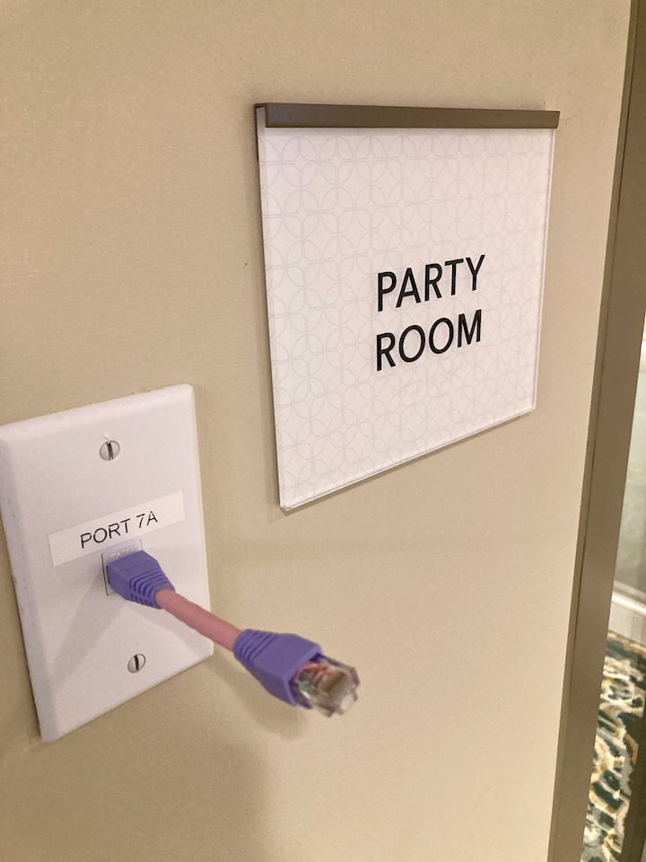
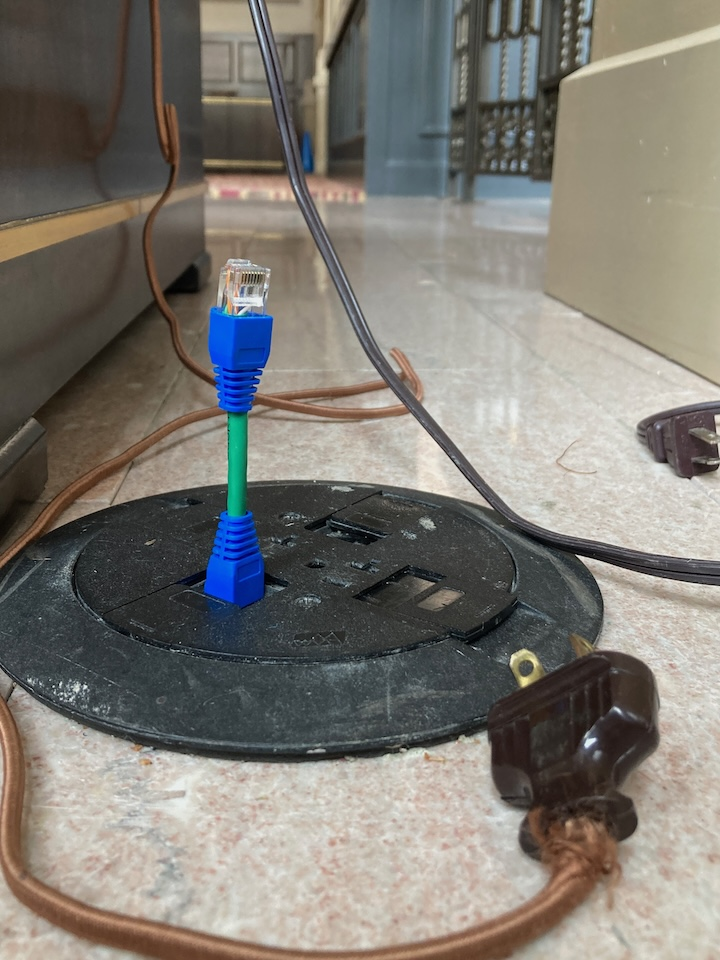
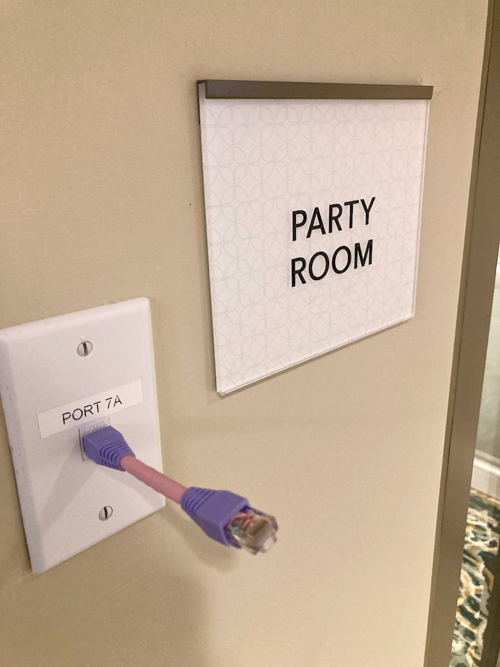
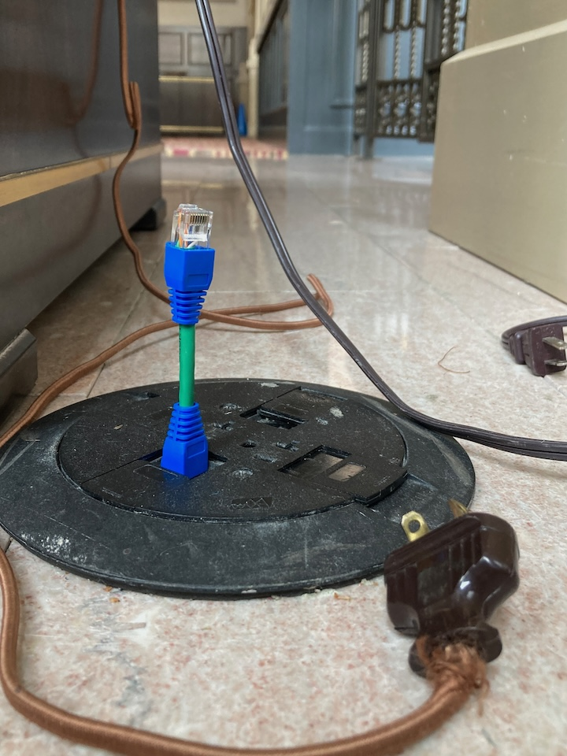
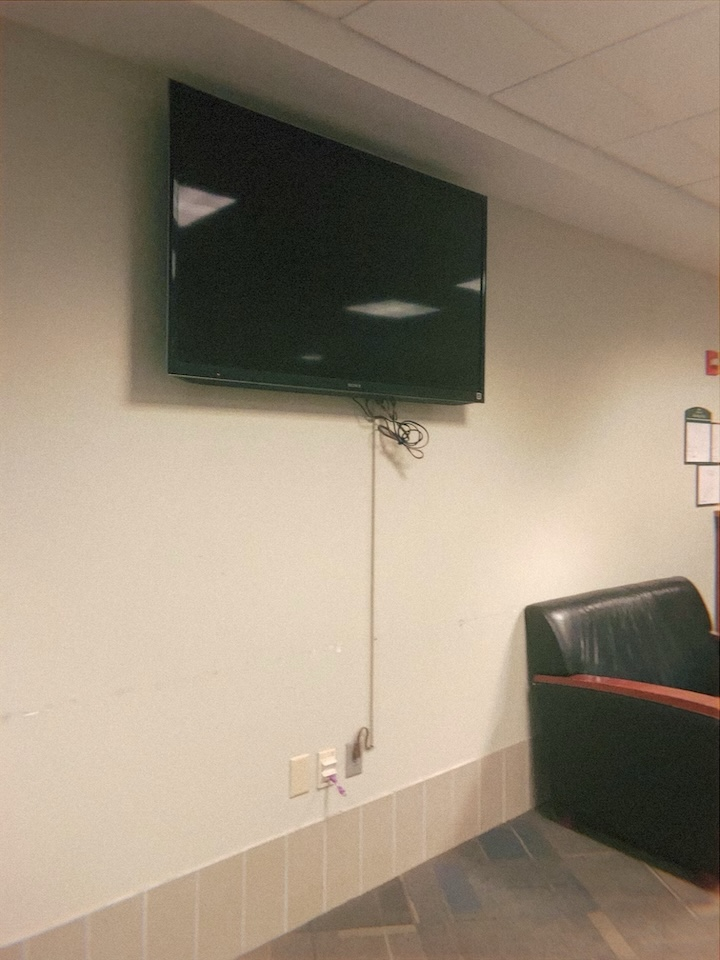
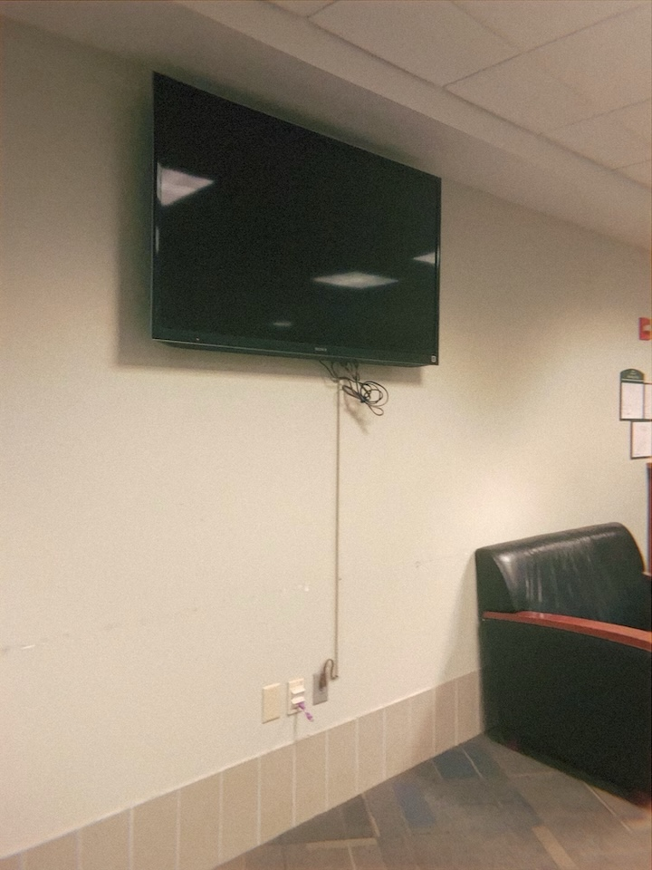

Petite UTP Convertible Ethernet Cables
Extremely small and functional Ethernet cables created by artist Doug MacDowell
Description: Petite UTP Convertible Cables are a new type of Ethernet cable.
Most ethernet cables are long - petite UTP's are short. Who cares?
Shorter cable = Faster speeds.
Petite UTP cables are fully functional and you can do whatever you like with them.
I like to place them in vacant ethernet ports.
 




 
